Project narratives currently available in English.
HUGHLINGS.
THE GNB PITCH.
Why I built a treatment-history documentation concept, pitched it in English and learned from an unsuccessful startup application.
What was I trying to build?
Why this matters
“Escalation in TRD already requires a documented treatment history. Today it is assembled by hand.”
Slide 02. The concept addresses manual review of treatment history before escalation decisions in treatment-resistant depression.
What the product would do
“Input: the chart. Output an auditable review and the document the system requires.”
Slide 05. A proposed evidence-linked documentation layer for clinicians, not autonomous diagnosis or prescribing.
What I sought from GNB
Slide 14 asks for access to 3–5 psychiatric units or private providers, introductions to Medbase and Doodex, and an MDR regulatory mentor. The deck explicitly says a clinical partner is the next key addition.
Not selected.
Still worth making.
I applied to GNB with a project outside my core professional background. I developed the concept, studied the treatment-history documentation problem, built a separate product website, prepared a 14-slide English pitch and recorded a short video. My application was unsuccessful, but the work expanded my understanding of medical technology, regulation and startup communication.
That attempt matters to my portfolio because it shows the initiative to explore a difficult domain, assemble an informed hypothesis, and communicate it to people beyond the software industry.
Hughlings
A proposed audit trail for treatment-resistant depression care escalation: reconstruct medication history, identify adequacy questions, flag exposure considerations and produce structured review evidence for a clinician.
This was a founder concept and pitch, not clinical deployment or evidence that a regulated medical device was approved or trialed.
14 slides.
One considered hypothesis.
Explore the actual pitch presentation. Slides include medical workflow positioning, proposed system architecture, market assumptions, regulatory planning and the request to the GNB program. Commercial figures in the deck are forecasts/hypotheses, not achieved ARR.
DOWNLOAD THE PITCH PDF ↓
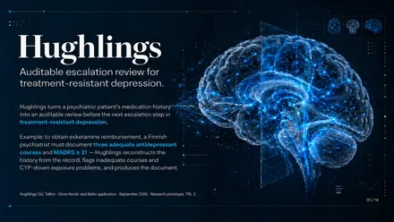
01 / 14 — VIEW SLIDE
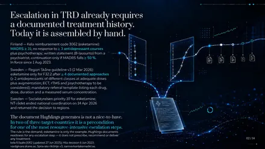
02 / 14 — VIEW SLIDE
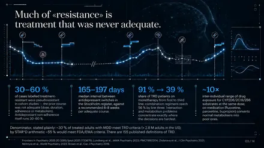
03 / 14 — VIEW SLIDE
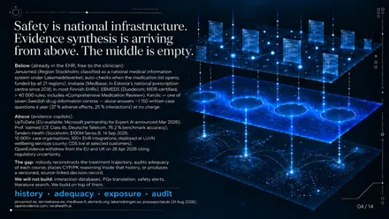
04 / 14 — VIEW SLIDE
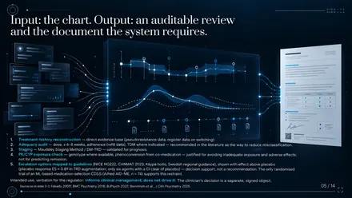
05 / 14 — VIEW SLIDE
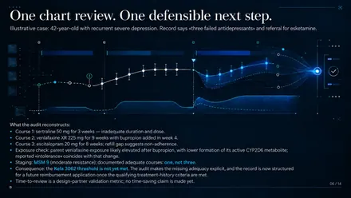
06 / 14 — VIEW SLIDE
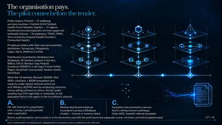
07 / 14 — VIEW SLIDE
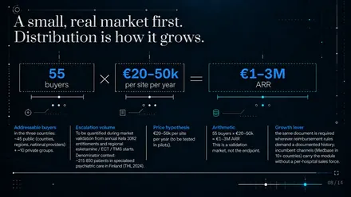
08 / 14 — VIEW SLIDE
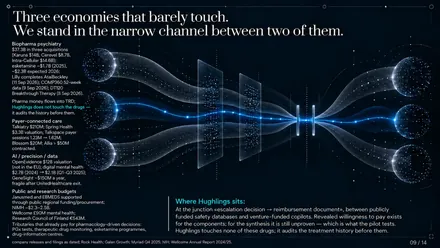
09 / 14 — VIEW SLIDE
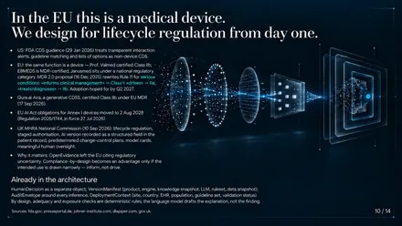
10 / 14 — VIEW SLIDE
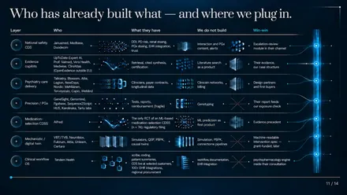
11 / 14 — VIEW SLIDE
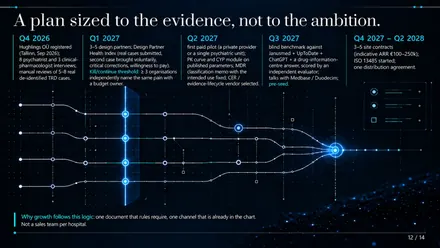
12 / 14 — VIEW SLIDE
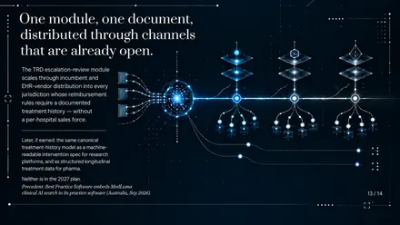
13 / 14 — VIEW SLIDE
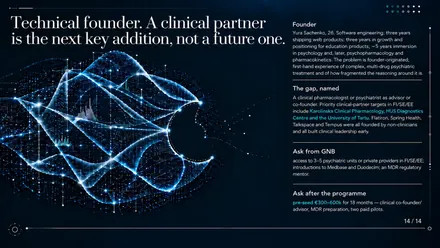
14 / 14 — VIEW SLIDE